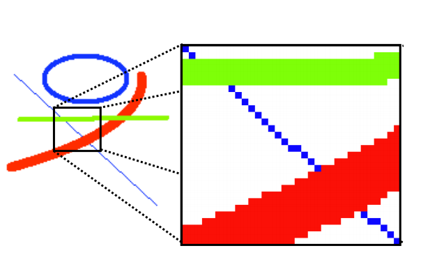
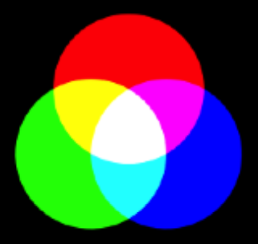

Adaptado do tutorial "A Anatomia de um Motor de jogo" de A.Coelho et al. Disponivel em https://web.fe.up.pt/~acoelho/wsjogos/ .
ÍndiceNeste tutorial vais aprender os princípios básicos do desenvolvimento de jogos digitais e compreender o funcionamento de um motor de jogo. Iremos desenvolver um jogo clássico, que foi um marco na história dos jogos digitais, com o qual iremos desvendar os princípios de funcionamento de um motor de jogo.
Este projeto como os anteriores será desenvolvido em javascript. Adicionalmente será usada a biblioteca p5.js para facilitar o desenvolvimento de uma aplicação gráfica.
A indústria dos jogos de computador é uma das mais lucrativas e com maior crescimento da atualidade. Tendo sido considerados como parentes pobres das outras aplicações informáticas “mais sérias”, os jogos de computador possuem, na atualidade, orçamentos equiparados aos filmes de Hollywood.

Um dos jogos mais marcantes da história dos jogos de computador foi o Pong, criado pela Atari Inc. em 1972. Não porque tivesse sido o primeiro jogo digital, mas porque foi o primeiro a ter êxito comercial, quer em máquinas arcade, quer em consolas domésticas, lançando as bases para a atual indústria dos jogos digitas. Os jogos digitais são, na sua generalidade, desenvolvidos para o entretenimento. No entanto, cada vez mais esta tecnologia ganha terreno em outras áreas como a educação ou a formação profissional (game-based learning/training) e as aplicações para a saúde, para as empresas, para a publicidade, entre muitas outras áreas com outros propósitos que não apenas o entretenimento (serious games).
O primeiro passo na criação de um jogo é a seleção ou o desenvolvimento do motor de jogo. Um motor de jogo é, na sua base, muito simplesmente um ciclo que atualiza todos os objetos e, sendo a maior parte dos jogos aplicações gráficas interativas, lê os dispositivos de entrada e sintetiza imagem e som nos dispositivos de saída.
Assim, o motor do jogo realiza as seguintes tarefas de forma cíclica:
Vamos usar p5.js para suportar o nosso motor de jogo. A biblioteca disponibiliza uma função draw que é chamada repetidamente. Vamos usar esta função para o nosso ciclo de jogo.
//Game Cycle
function draw() {
// Game Logic
// Output devices
// Ball
fill(255,255,0);
ellipse(ball.x, ball.y, 16, 16);
}
A biblioteca p5.js trata dos dispositivos de entrada que vamos utilizar (teclado) sendo apenas necessário tratar da logica do jogo e dos dispositivos de saída.
Na logica do jogo é preciso atualizar o estado e os objetos de jogo. Neste exemplo ainda não colocamos nenhum código, que irá aparecendo ao longo das próximas secções...
O passo a seguir desenha o interface gráfico. Neste caso, desenha a bola no ecrã, na sua posição, com o tamanho 16 por 16 pixeis.
Mas antes de se poder usar o ciclo de jogo, é necessário algum código para incluir a biblioteca, inicializar o ambiente gráfico e do próprio jogo.
Incluimos algum html genérico para a pagina do jogo. Incluimos a biblioteca p5.js com uma tag script que referencia um ficheiro externo com a propriedade src. E finalmente incluimos uma tag script para o nosso javascript.
No nosso javascript vamos declarar a função setup, chamada pelo p5.js no inicio do jogo.
<html>
<head>
<title>Pong</title>
</head>
<script src="p5.js"></script>
<script>
// Variables
var ball = {}
// Initialization
function setup() {
createCanvas(480,320);
ball.x = width / 2;
ball.y = height / 2;
}
// Game Cycle
//(...)
</script>
</html>
Começa-se com uma zona de declarações onde vamos colocar as nossas variáveis. Para já só precisamos de um objeto vazio que represente a bola.
De seguida implementamos a função setup. Aqui criamos a janela gráfica, com a função createCanvas, passando os argumentos largura e altura. Inicializamos também a posição da bola, no centro do ecrã.
Com este programa básico apenas poderá visualizar um círculo amarelo em fundo branco... Nada que se pareça com um jogo digital...

Uma das saídas mais importantes para a maioria dos jogos de computador é a imagem (daí que sejam também conhecidos por videojogos). As imagens são apresentadas em ecrãs de computador segundo um sistema de referência cartesiano, onde cada objeto geométrico é representado pelos seus vértices, cada um dos quais se associa a um par de coordenadas (x,y), tal como apresentado na seguinte imagem.

Em javascript, os gráficos são apresentados em bitmaps, ou seja, matrizes de pixels. Um pixel ("PICture ELement") é o menor elemento que compõe uma imagem e ao qual é possível atribuir-se uma cor. Desta forma, qualquer imagem em javascript, inclusivamente o ecrã, é tratado como uma matriz, com uma determinada dimensão (nº de pixels largura x nº de pixels altura). É possível atribuir um determinado valor de cor a cada pixel para formar qualquer gráfico, tal como apresentado na seguinte figura.
O javascript não opera diretamente no ecrã, por razões que têm que ver com restrições impostas pelos sistemas operativos e pelo browser, mas sim em janelas gráficas. As coordenadas nestas janelas são valores inteiros entre 0 e as dimensões da imagem (subtraídos de 1). Ou seja, tomando como exemplo uma janela com dimensões 800x600, a coordenada x pode tomar valores entre 0 e 799 e a coordenada y pode tomar valores entre 0 e 599. A origem do referencial é o canto superior esquerdo.
Já consegue perceber o que faz a seguinte instrução:
createCanvas(480,320);Cria uma janela gráfica com as dimensões dadas, neste caso 480x320.
A definição da cor a atribuir a cada pixel é realizada através da especificação de 3 componentes, que quantificam a contribuição de cada uma das três cores do modelo RGB. O modelo de cores RGB é um modelo aditivo no qual o vermelho, o verde e o azul são combinados de diversas maneiras para reproduzir outras cores, tal como pode ser observado na imagem anterior. O nome do modelo e a abreviação RGB vêm das três cores primárias: vermelho, verde e azul (Red, Green e Blue, em inglês).
No código apresentado anteriormente, antes da instrução ellipse que desenhava a bola tinhamos uma instrução fill que tinha como 3 parâmetros os valores (255,255,0) que define a cor com que preencher a forma (amarelo). Repare-se que o amarelo é definido pela mistura das componentes vermelho e verde.
Voltando ao nosso jogo do Pong, verifica-se a necessidade de desenhar a bola e ambas as raquetes. Para a primeira, utilizaremos um círculo, enquanto para as raquetes utilizaremos retângulos.
O código para o desenho da bola e das raquetes ficará definido pelas seguintes chamadas aos métodos ellipse e rect, definidas pelo p5.js.
// Ball
fill(255,255,0);
ellipse(ball.x, ball.y, 16, 16);
// Pads
fill(255,0,0);
rect(padLeft.x, padLeft.y, padLeft.w, padLeft.h);
fill(0,0,255);
rect(padRight.x, padRight.y, padRight.w, padLeft.h);
No entanto, há que definir variaveis para guardar a posição da bola assim como a posição e tamanho das raquetes. Escreva o seguinte código na secção de variaveis e na função setup:
// Variables
var ball = {}
var padLeft = {};
var padRight = {};
// Initialization
function setup() {
createCanvas(480,320);
// Set the ball position
ball.x = width / 2;
ball.y = height / 2;
// Set the size of the pads
padLeft.h = padRight.h = 64;
padLeft.w = padRight.w = 16;
// Set the position of the pads
padLeft.x = 32;
padLeft.y = height/2 - padLeft.h/2;
padRight.x = width - 32 - padRight.w;
padRight.y = height/2 - padRight.h/2;
}
Nota: width e height são variaveis atualizadas pelo p5.js que guardam o tamanho da janela gráfica.
Se experimentar agora o código deverão aparecer as raquetes para além da bola.
Qualquer jogo de computador precisa de um conjunto de variáveis que armazenem as propriedades dos diversos elementos do jogo. Neste caso particular, consideram-se os dois jogadores, as suas raquetes, a bola e os valores ou restrições associados ao jogo.
A bola e as raquetes já têm variáveis que permitem redefinir a sua posição. No entanto faltam as variáveis associadas ao jogo em si, neste caso, o número de golos de cada jogador.
Assim, na secção de inicialização acrescente o seguinte código:
// Init the score
padLeft.score = 0;
padRight.score = 0;
Um jogo de computador é uma aplicação interativa, e como tal é essencial definir a forma como o jogador poderá interagir com o jogo. Para este jogo do Pong, optou-se por utilizar o teclado, especificamente as teclas de seta para cima e para baixo, para mover a raquete do jogador da direita, sendo a raquete da esquerda movimentada pelo computador.
Crie a nova variável padSpeed e acrescente o seguinte codigo na secção da lógica de jogo:
// Variables
var ball = {}
var padLeft = {};
var padRight = {};
var padSpeed = 4;
//(...)
//Game Cycle
function draw() {
// Game Logic
// Pad movement
if (keyIsDown(UP_ARROW)) padRight.y -= padSpeed;
if (keyIsDown(DOWN_ARROW)) padRight.y += padSpeed;
// Output devices
//(...)
}
A raquete do jogador 1 começa a responder ao movimento do rato... Mas o resultado é inesperado...
O efeito de animação é criado ao apresentar uma sequência de imagens a uma velocidade suficientemente rápida. Para que a cada ciclo a imagem apresentada seja diferente da anterior, é necessário apagar o que foi desenhado anteriormente.
Assim, acrescente uma instrução para apagar o ecrã no início da fase de visualização:
//Game Cycle
function draw() {
// Game Logic
//(...)
// Output devices
// Clear the screen
background(0,0,0);
// Ball
//(...)
// Pads
//(...)
}
A animação deve-se realizar a uma determinada frequência que, no caso das aplicações gráficas, se denomina Frames Por Segundo (FPS). O p5.js prepara as coisas para que, por default, o nosso jogo corra a 60 FPS.
Existe ainda um problema... a raquete consegue sair do ecrã. Vamos acrescentar o seguinte codigo na lógica do jogo para resolver o problema:
// Pad Bounds
padLeft.y = constrain(padLeft.y,0,height-padLeft.h);
padRight.y = constrain(padRight.y,0,height-padRight.h);
Pode saber mais sobre a função constrain e outras funções úteis definidas pelo p5.js na sua documentação.
Até ao momento, o nosso jogo do Pong já se tornou interativo dado que é possível controlar a raquete do jogador através do teclado. No entanto, uma grande maioria de jogos de computador pressupõe a movimentação de diversos elementos do jogo. Neste caso baseia-se na movimentação da bola (deslocamento e rebatimento nas paredes e raquetes). A simulação deste tipo de movimentos poderá ser efetuada desde uma forma muito simples, até à utilização de uma biblioteca de funções para simulação dos processos físicos – o motor de física.
Para este caso, utilizaremos um mecanismo relativamente simples, baseado num vetor velocidade, que é utilizado para atualizar a posição da bola a cada ciclo de jogo. Este vetor é representado por duas variáveis, vx e vy, que representam as componentes x e y, a serem colocadas junto à definição da posição da bola. Quando a bola bate em algum obstáculo (parede ou raquete), uma das componentes (x ou y) do vetor velocidade é tornada simétrica. Exemplificando, quando a bola bate na parede de cima ou de baixo, a componente y da velocidade é tornada simétrica (por exemplo, se a bola subia, passa a descer) e, quando atinge qualquer das raquetes, é a componente x que é tornada simétrica.
Vamos criar uma função para lançar/reposicionar a bola:
// Function to reset the ball
function resetBall() {
// Place the ball at the center of the screen
ball.x = width / 2;
ball.y = height / 2;
// Flip the direction the ball is going
ball.vx = -ball.vx;
// Reset the ball's vertical speed
ball.vy = 0;
}
Vamos também criar uma variável para a velocidade da bola e inicializar a bola no inicio do jogo, substituindo a inicialização que tinhamos anteriormente para a bola:
// Variables
var ball = {}
var padLeft = {};
var padRight = {};
var padSpeed = 4;
var ballSpeed = 5;
//(...)
// Initialization
function setup() {
createCanvas(480,320);
// Set the ball's initial speed and reset it
ball.vx = ballSpeed;
resetBall();
//(...)
}
Mas para que a bola seja efetivamente animada é necessário atualizar a sua posição no ecrã a cada ciclo de jogo. O código definido a seguir deverá ser inserido no bloco da lógica do jogo.
A primeira questão a considerar é a atualização da posição da bola, de acordo com a velocidade, bem como a determinação das coordenadas de ecrã:
// Game Logic
// Ball movement
ball.x += ball.vx;
ball.y += ball.vy;
A segunda questão é a confrontação com os limites do jogo. Repare que sendo as coordenadas da bola relativas ao seu centro, a confrontação terá que ter em conta o seu raio:
// Ball Bounds
// Left
if (ball.x < 0) {
padRight.score++;
resetBall();
}
// Right
if (ball.x > width) {
padLeft.score++;
resetBall();
}
// Top and Bottom
if (ball.y < 0 || ball.y > height) ball.vy = -ball.vy;
E, finalmente, a terceira questão a considerar é a confrontação da bola com as raquetes. Dado que a raquete é representada por um retângulo, optou-se por verificar a colisão destes com a posição da bola.
// Pad impacts
// Right pad
if (ball.vx > 0 && pointInsideRectangle(ball.x, ball.y, padRight.x,padRight.y,padRight.w,padRight.h)) {
// Reverse the ball's speed along the x-axis
ball.vx = -ball.vx;
}
// Left pad
if (ball.vx < 0 && pointInsideRectangle(ball.x, ball.y, padLeft.x,padLeft.y,padLeft.w,padLeft.h)) {
// Same as above
ball.vx = -ball.vx;
}
Nota: Acrescenta-se a verificação de se a bola está a andar para a esquerda ou direita (ball.vx < 0 ou ball.vx > 0) para garantir que a velocidade da bola apenas é invertida uma vez quando bate na raquete.
Falta-nos a função pointInsideRectangle. Deixa-se como exercício a análise da implementação função e do seu funcionamento.
// Function to check if a given point is inside a given rectangle
function pointInsideRectangle(point_x,point_y, rect_x,rect_y,rect_w,rect_h) {
var overlaps_x = point_x >= rect_x && point_x <= rect_x + rect_w;
var overlaps_y = point_y >= rect_y && point_y <= rect_y + rect_h;
return overlaps_x && overlaps_y;
}
Agora já se parece mais com um jogo... Exceto o facto de o jogo não terminar e de o jogador 2 estar estático...
Sugestão: Certamente reparou que o movimento é muito previsível e depois de iniciado deixa poucas margens a alteração. Seria certamente mais aliciante, se fosse possível alterar o ângulo de reflexão da bola com o movimento da raquete (uma espécie de "efeito" aplicado à bola).
Por exemplo:
// Set a new vertical speed based on where the ball hit on the pad
ball.vy = map(ball.y - padRight.y, 0,padRight.h, -ballSpeed,ballSpeed);
Nota: Mais uma vez, pode descubrir o que faz a função map visitando a documentação de p5.js.
Até esta fase não deverá ter tido dificuldade em derrotar o jogador adversário... mais exatamente porque ele não existe!
Nos jogos de computador que requeiram mais do que um jogador, é necessário arranjar forma de controlar o segundo jogador (ou restantes). Uma possibilidade é permitir que mais do que um jogador possa utilizar o teclado ou o rato (ou outro periférico) no mesmo computador, ou em computadores distintos, partilhando uma ligação em rede. Outra forma, é "dar inteligência" ao computador para que possa tomar o lugar dos outros jogadores. Esta "inteligência" pode ir de algo extremamente simples, como será o caso deste jogo, até algoritmos extremamente complexos, como no caso de jogos de estratégia, caindo no âmbito de áreas científicas com a Inteligência Artificial.
Neste jogo do Pong, optaremos pela segunda opção, em que o computador controlará o jogador 2. A estratégia será simples, fazendo deslocar a raquete na vertical enquanto a coordenada y da bola for diferente. A raquete só se deslocará quando a bola for na sua direção, e de acordo com o facto de a bola estar acima ou abaixo da raquete, o sentido do deslocamento será distinto. O seguinte código, a colocar no bloco de lógica do jogo, executa esta funcionalidade:
// AI opponent
var targetY = ball.y - padLeft.h/2;
if (targetY > padLeft.y) padLeft.y -= padSpeed;
else if (targetY < padLeft.y) padLeft.y += padSpeed;
O computador é bastante eficiente e preciso a jogar, dado ter acesso às variáveis do jogo. Isto nem sempre é uma vantagem, pois desmoraliza o jogador humano que, se vir que será quase impossível ganhar, na maioria das vezes, desiste. Assim, é comum diminuir a precisão do seu jogo, através da limitação do acesso a estes dados ou da introdução de "ruído", incorporando erros aleatórios.
Sugestão: No nosso caso, poderíamos tentar limitar a resposta do computador a um "campo de visão" limitado. Ou seja, o computador só poderia mexer a sua raquete quanto a bola estivesse a uma distância inferior a um determinado valor (por exemplo, metade da janela de jogo).
Sugestão: Também se repara que o movimento da raquete do adversário é errático. Isto acontece porque o passo com que se move a raquete é, por vezes, demasiado grande. Poder-se-ia resolver isto verificando se a distância que a raquete tem de percorrer é inferior a padSpeed e, se for, posicionando a raquete diretamente na posição para que tem de ir.
Agora já se parece mais com um jogo. Dois jogadores conformam-se... Mas não há vencedor!
O objetivo final de um jogo de computador, tal como de outro jogo qualquer, é... vencê-lo!
É assim imprescindível mostrar ao jogador qual a sua pontuação ou a progressão no jogo, quando este é jogado por níveis ou etapas. No caso do jogo do Pong, a situação de jogo é retratada pelos golos de cada um dos jogadores. Quem marcou mais golos está a ganhar...
Para mostrar o resultado do jogo colocar-se-á um texto com o número de golos de cada um dos jogadores, especificados nas variaveis anteriormente definidas. Assim, no bloco de código que desenha a interface será necessário acrescentar o seguinte código:
// Score
textSize(32);
textAlign(CENTER);
fill(255,255,255);
text(padLeft.score + ' - ' + padRight.score, width/2, 32);
Este tipo de interface, denominada HUD (Heads-up display) caracteriza-se por se sobrepor de forma transparente ao jogo, minimizando o espaço ocupado. Como princípio de usabilidade, a interface deve mostrar toda a informação que é essencial, sem ser intrusiva.
Chega ao fim este tutorial, mas os autores esperam que tenha servido para dar uma perspectiva sobre o desenvolvimento de jogos digitais e das diversas componentes de um motor de jogo (a sua “anatomia”).
Com os conhecimentos obtidos e com o Pygame pode agora desenvolver outros jogos digitais, para os quais o limite é apenas a sua imaginação! A criação e desenvolvimento de jogos digitais é um trabalho de um coletivo, preferencialmente multidisciplinar. Convide outros amigos a juntarem-se ao seu projeto, preferencialmente com perfis diversificados.
O javascript e o p5.js não são um fim mas um apenas início para esta viagem, e existem disponíveis diversos motores de jogo com capacidades distintas que se podem adequar melhor a cada tipo específico de jogos digitais que pretenda desenvolver. Alguns desses motores de jogo têm capacidades mais elevadas e por isso operam a um nível mais elevado, que esconde muito do detalhe que acompanhou ao longo deste tutorial. Mas poderá agora perceber melhor as diversas opções disponíveis nesse tipo de software.